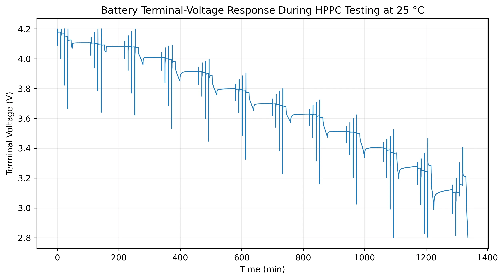
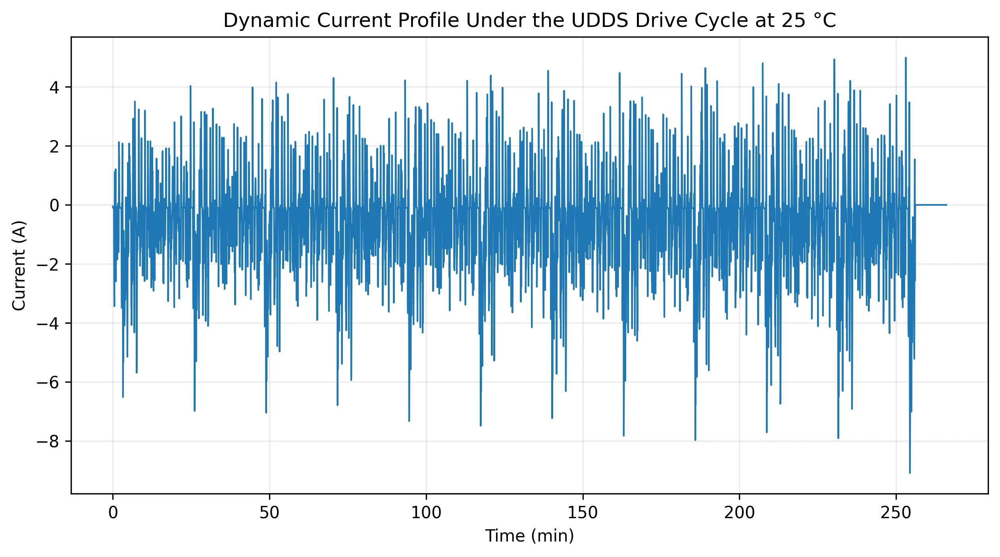
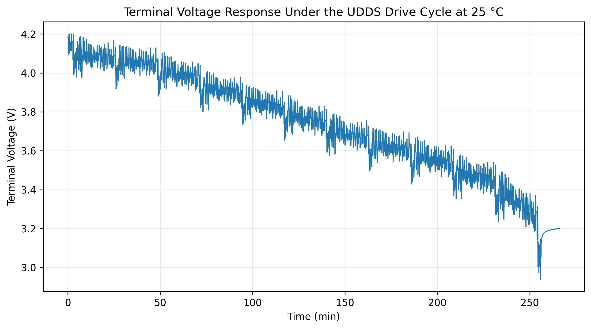
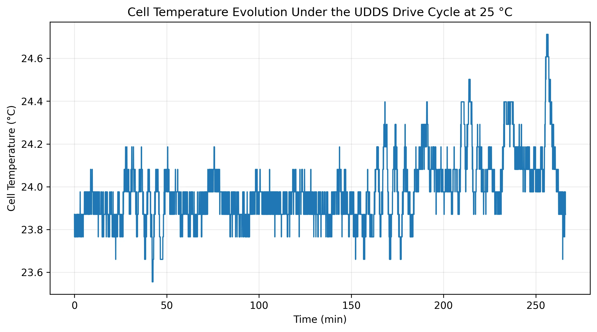
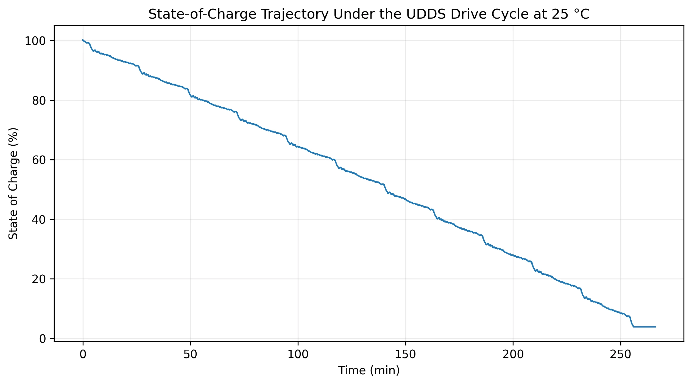

Data-Driven Battery SOC Estimation
Comparing neural-network approaches to state-of-charge prediction.
Explore case studyCondition-aware cloud assistance without giving up local safety.
Condition-aware cloud assistance without giving up local safety. Continuous cloud communication is expensive and introduces latency. A battery manager still needs local estimation and protection when connectivity becomes unreliable.
The reduced-order equivalent-circuit representation in the project report uses:
Vt = OCV(SOC, T) − I R0 − Vp
Here terminal voltage is related to open-circuit voltage, ohmic resistance, current and polarization voltage. Temperature and per-cell dynamics matter for safe operation.
The controller requests cloud assistance when a triggering condition is met. It considers voltage residuals, uncertainty, temperature, current stress, measurement quality and synchronization.
γk ∈ {0, 1}
γ = 1 means request cloud communication; γ = 0 means continue at the edge. The returned information must pass a safety gate before being used.
17.2% is mathematically derived from the report’s 82.8% reduction. This is a normalized comparison, not a newly measured trace; result is limited to the tested PIL configuration.
These are images of the supplied report figures, not reconstructed numerical data. Downloadable raw measurements and time-series hover tools can be added once datasets are approved.

Figure 2. Voltage response to pulse and relaxation inputs, used for parameter identification. Taken directly from the October 2026 project report. Select the image to open a larger view.

Figure 3. Dynamic charge and discharge current profile. Taken directly from the October 2026 project report. Select the image to open a larger view.

Figure 4. Voltage under the UDDS drive cycle. Taken directly from the October 2026 project report. Select the image to open a larger view.

Figure 5. Cell temperature trajectory from the supplied dataset. Taken directly from the October 2026 project report. Select the image to open a larger view.

Figure 6. Reference SOC trajectory; not, by itself, an estimator error plot. Taken directly from the October 2026 project report. Select the image to open a larger view.
The October 2026 report states that an OPAL-RT real-time battery plant and physical TI C2000 controller form the next experimental stage. Simulation and PIL-oriented work should not be mistaken for completed closed-loop CHIL evidence.
Continuous cloud communication is expensive and introduces latency. A battery manager still needs local estimation and protection when connectivity becomes unreliable.
Developed the four-cell modelling approach, event-trigger logic, safety gate, estimator structure and embedded-oriented validation workflow.
A four-cell equivalent-circuit and thermal plant feeds an edge BMS. Residuals, uncertainty and safety margins determine when the controller requests cloud help. Returned corrections are checked for physical consistency, confidence and freshness before use.
Approximately 82.8% fewer edge-to-cloud communications relative to continuous communication in the tested PIL configuration.
Physical Controller Hardware-in-the-Loop results have not yet been reported. Stability guarantees and cross-chemistry generalization remain open research directions. Perform OPAL-RT / physical TI C2000 closed-loop validation; quantify latency and overruns; investigate formal event-triggering and robust estimation guarantees.
Study whether residual-, uncertainty- and risk-aware cloud requests can reduce data exchange while retaining local estimation and safety responsibility. This is a research objective, not a proven universal theorem.
Vₜ = OCV(SOC, T) − IR₀ − Vₚ; rᵥ(k) = Vmeasured(k) − Vpredicted(k); γₖ ∈ {0,1}. Here γₖ = 1 denotes a cloud request.
HPPC-type pulses at 25°C for equivalent-circuit identification; UDDS at 25°C for dynamic evaluation. The supplied report plots current, voltage, cell temperature and reference SOC.
Continuous edge-to-cloud communication, normalized to 100% of its messages in the tested PIL configuration.
A replicator would need the identified four-cell ECM/thermal parameters, drive-cycle input, event-trigger settings, safety-gate thresholds, logging definition and the original execution configuration. Those files are not included with this public website.
Results are only as informative as the experiment and baseline used to obtain them.
| Research objective | Study whether residual-, uncertainty- and risk-aware cloud requests can reduce data exchange while retaining local estimation and safety responsibility. This is a research objective, not a proven universal theorem. |
|---|---|
| Dataset / conditions | HPPC-type pulses at 25°C for equivalent-circuit identification; UDDS at 25°C for dynamic evaluation. The supplied report plots current, voltage, cell temperature and reference SOC. |
| Comparison baseline | Continuous edge-to-cloud communication, normalized to 100% of its messages in the tested PIL configuration. |
| Reported evidence | Communication reduced by approximately 82.8%; the event-triggered condition therefore corresponds to 17.2% of the baseline count (derived, not separately measured). |
| Interpretation | Selective communication was feasible in the reported test without delegating immediate safety responsibility to cloud updates. Communication reduction alone does not establish estimator robustness or safety in all circumstances. |
| Known limitations | The report does not give a public trace-level request-count table, confidence interval or experimental repetitions for this figure. The 82.8% result must not be generalized without further tests. |
| Reproducibility | A replicator would need the identified four-cell ECM/thermal parameters, drive-cycle input, event-trigger settings, safety-gate thresholds, logging definition and the original execution configuration. Those files are not included with this public website. |
| Validation status | Reported PIL result; physical OPAL-RT / TI C2000 closed-loop CHIL remains planned. |
| Provenance | October 2026 project report, sections 4–6, 14–16 and 23; figures 2–6. |
October 2026 project report, sections 1–16. Code repository is private and is not linked.
Evidence type: Scientific project report, October 2026; academic CV
Statements are limited to the documents and repository materials available when the site was prepared.
An automated guide using approved portfolio content — not Jyotirmoy.
Runs entirely in your browser. No messages are stored or sent to an AI provider.